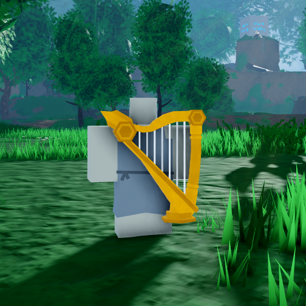
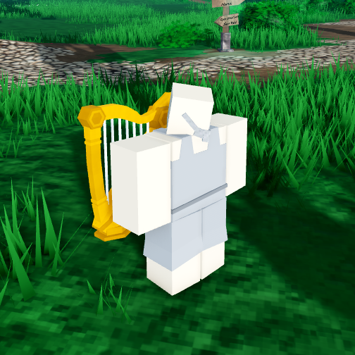

Zoopa's Harp

Stats
Slot: Accessory
Recolorable?: Yes
Particle Effects: None
Sound Effects: Yes
Owner: Zoopa
Description
Zoopa's Harp is an accessory that appears to be an elaborate, golden harp with white strings. It floats behind the player and follows them around. It is somewhat large, being bigger than the player's torso. Zoopa's Harp will occassionally play musical chords from a random list. It is one of the few relics that has it's own sound effects, the others being Bojji and Tusk.
Inspiration
Zoopa's Harp was inspired by the harp instrument, specifically the Golden Harp from Sorcery: Contested Realm. The short chords that it plays were inspired by the similar melodies for the Harpstring Bow.

